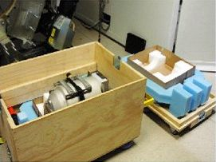
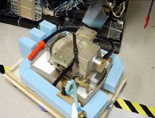
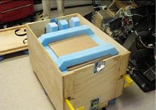

Operating Documentation
Direction 5193855-800, Rev# 4
LS 5.X RT Ltd. Access Service Information Adv
Operating Documentation |
| Required Persons | Preliminary Reqs | Procedure | Finalization |
|---|---|---|---|
| 1 | 10 mins |
The objective of this procedure is to demonstrate tube removal and installation from the crate for the Performix Pro X-Ray tube. This crate is double-sided, meaning that the base and cover are interchangeable.
| Last Revised: | November 2003 |
Remove the cover. Flip it over and place near gantry. The cover will become the base of the container for returning the dead tube from the field.
Place the top piece of Styrofoam packaging on the base.
Illustration 1: Crate Cover Flipped

Remove tube and lower it with the hoist so that is falls upside down on this new base. The tube port should be upward.
Secure the tube by tightening the strap around the tube.
Illustration 2: Tube on New Base

After the new tube has been removed from the crate, detach the crate's box from the old crate base and attach to the new base.
Place the other Styrofoam packaging piece on the top of the X-Ray tube in the crate.
Illustration 3: Tube Packaged

Place cover on crate. Tube is ready to be shipped.
No finalization required.